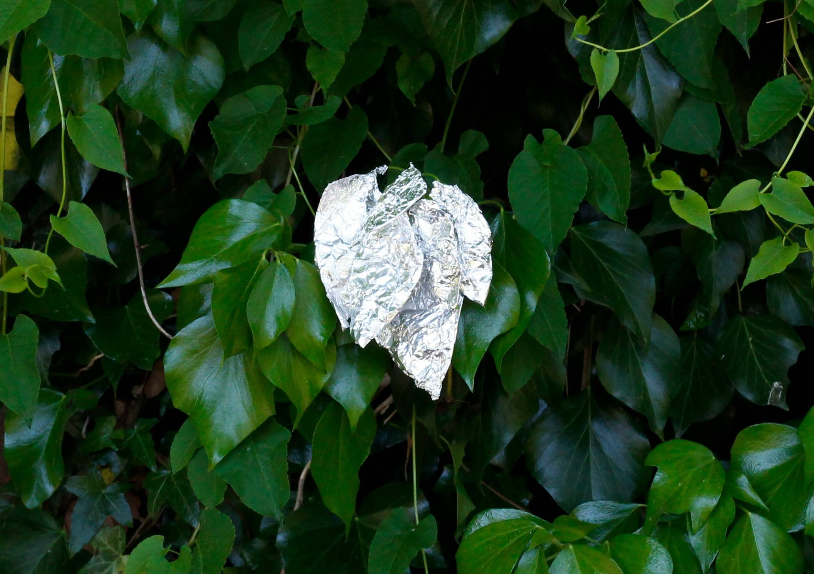
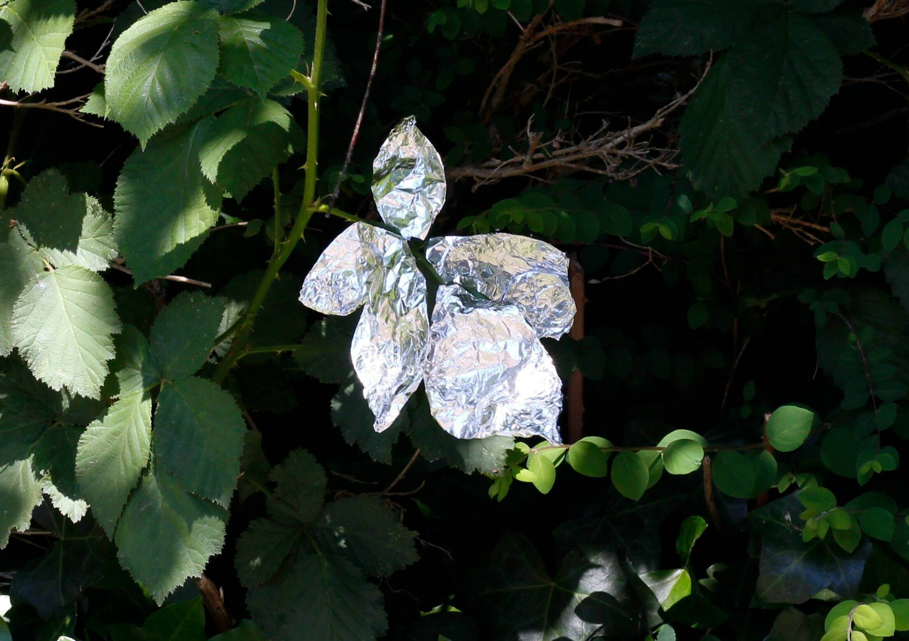
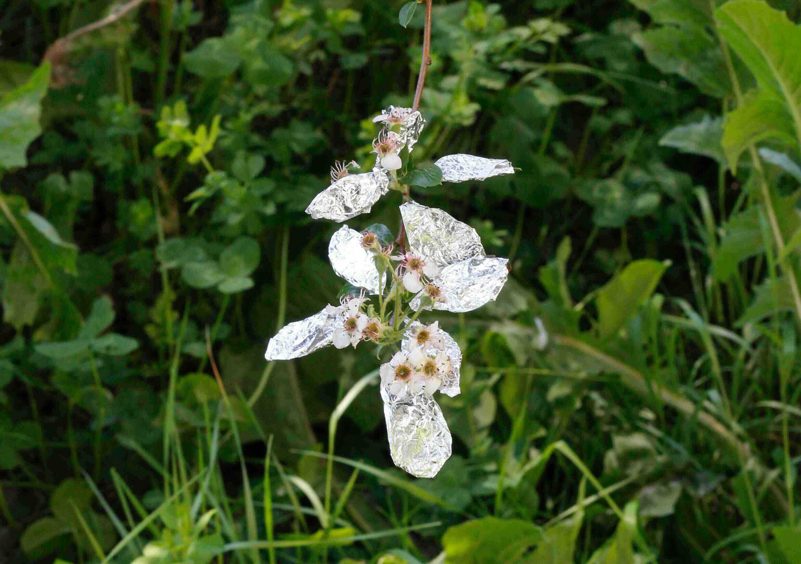
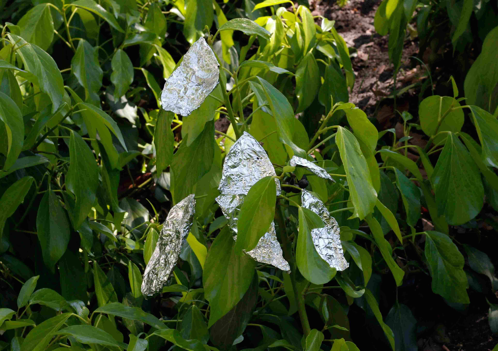
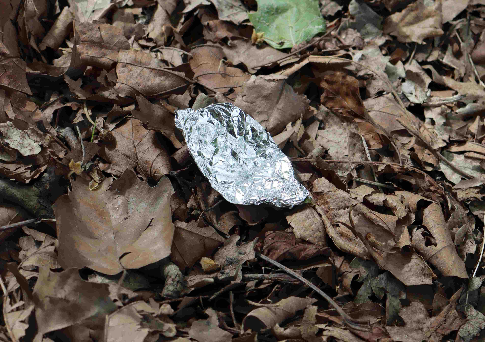
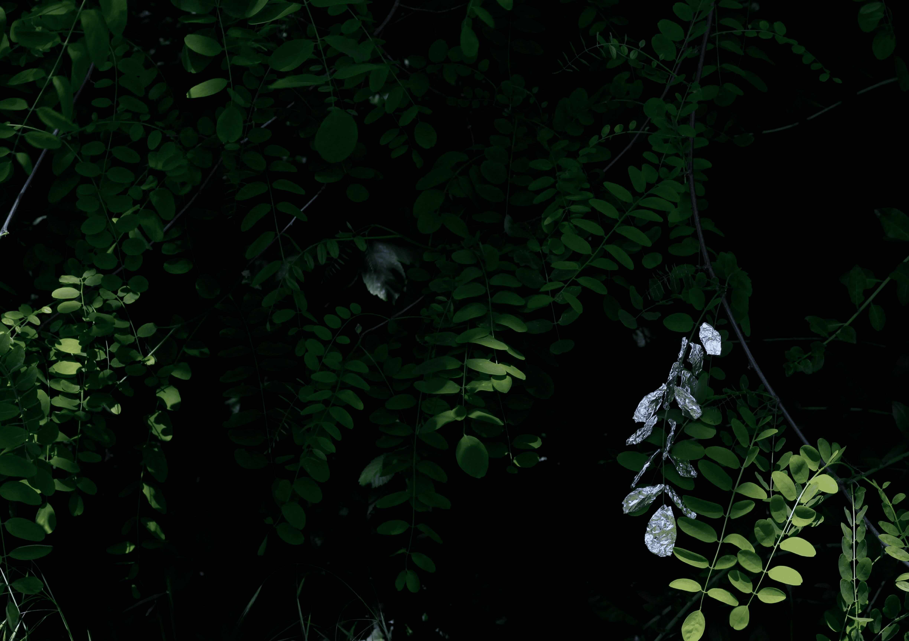

1 of 11
Through the combination of natural and artificial materials, the Foliage photography series explores the moments when familiar objects look unfamiliar. The leaves and branches are wrapped in aluminum foil to maintain the shape of the natural object, but the reflective metal surface is intended to show a different natural image than before. We usually interpret things based on our familiar experiences, memories, and patterns rather than seeing them as they are. By adding artificial materials onto natural objects, I tried to show how familiar forms of nature can be perceived as new images through small interventions and changes.











❮
❯